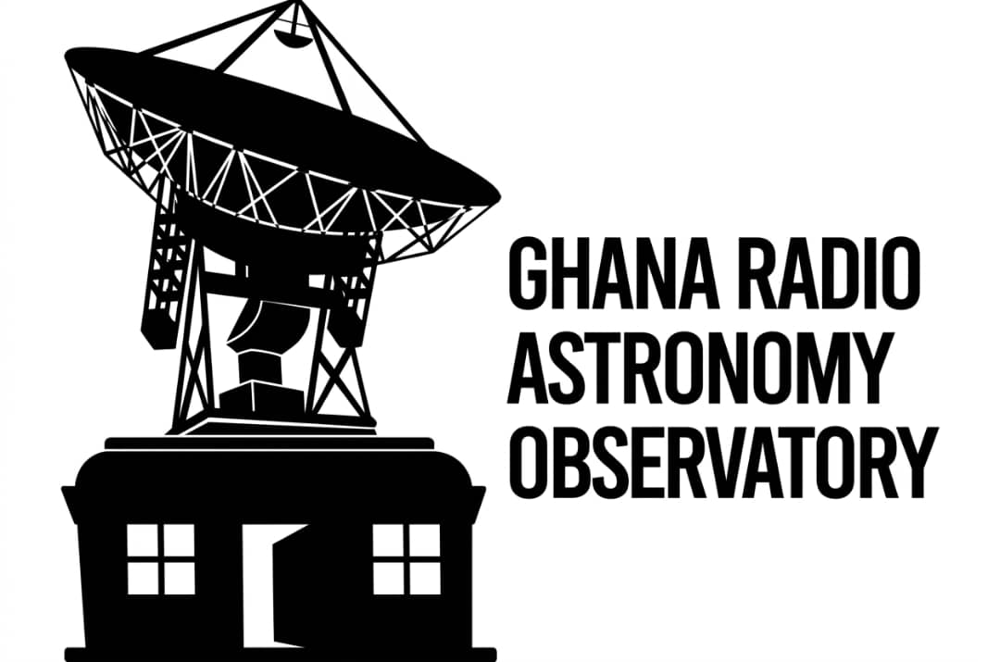

Observing focus
6.7 GHz methanol masers, source variability, and spectral-line monitoring.
Astronomical research project · Radio astronomy
Asto GH studies astrophysical masers through long-term monitoring, spectral analysis, and collaborative observing campaigns connected to the Ghana Radio Astronomy Observatory.

Project overview
The project combines targeted observations, catalogue building, and cross-institution collaboration to investigate maser emission linked to star formation, compact objects, and evolving galactic environments. Observing strategy supports repeat measurements, calibration quality, and reproducible analysis that can be shared with researchers, students, and partner observatories.
6.7 GHz methanol masers, source variability, and spectral-line monitoring.
Programmes designed around the Ghana 32-metre radio telescope and partner facilities.
Publication-ready outputs, curated observing records, and accessible data pathways.
Understanding masers
A maser is “Microwave Amplification by Stimulated Emission of Radiation” — a natural cosmic phenomenon where specific molecules emit intense, coherent microwave radiation. Unlike lasers that emit visible light, masers operate in the microwave region of the spectrum.
Astrophysical masers are found in diverse cosmic environments: star-forming regions, evolved stars, active galactic nuclei, and supernova remnants. They serve as crucial probes of physical conditions and dynamics in these distant, complex regions of space.
The primary focus of Asto GH observations. Methanol masers emit intense radiation at 6.7 GHz and are predominantly found in star-forming regions where young, massive stars heat surrounding gas and dust.
Masers display high brightness temperatures, narrow spectral line widths, and variable emission patterns over time. Long-term monitoring campaigns like Asto GH track these variations to understand source activity, detect rare outbursts, and probe the physical conditions in star-formation zones.
Research goals
These goals summarise the project’s stated scientific direction. Specific targets and outcomes are refined as observing cycles progress.
Track 6.7 GHz methanol maser emission over time to characterise changes in source activity.
Assemble source summaries, observing metadata, spectra, and derived products for collaborators.
Maintain calibration quality and reduction workflows that can be re-used and verified across teams.
Connect students and partner institutions in Africa with live astronomical data workflows.
Observations & findings
The project conducts targeted and repeat observations with the Ghana 32-metre telescope and partner facilities, recording spectra and session metadata for every run.
Add the current target list, frequency setup, and session cadence here.
Add confirmed detections, spectral plots, and quality flags once reviewed.
Add validated scientific findings, with references, as they are published.
Note: This section intentionally contains labelled placeholders. No scientific results, detections, or figures have been invented — verified observations and findings will be added here as they become available.
Team

Project lead
Research Scientist, Radio Astronomy and Astrophysics
Ghana Space Science and Technology Institute
Dr. Woode guides target selection, observing cadence, and interpretation of maser signatures while coordinating the Asto GH team across data reduction, validation, and publication preparation.
Schedules observations, monitors system performance, and records session metadata.
Processes spectra, tracks source variability, and produces quality-controlled research outputs.
Support catalogue updates, visualisation work, and literature integration across project cycles.
Partners
GSSTI
National institute for advancing space science, technology research, and capacity building across Ghana’s scientific community.

DARA
A collaborative programme supporting radio astronomy development, capacity building, and cross-border research initiatives across African nations.

GRAO
Home to the 32-metre radio telescope and the centre for observational campaigns, equipment, and the primary data acquisition facility for Asto GH observations.

SKA Africa
Pan-continental initiative developing Africa’s radio astronomy capabilities through infrastructure development, training programmes, and next-generation telescope projects.
Publications
The records below retain the project’s existing titles. Full citation details — authors, journal, and DOI — are placeholders to be completed.
2025
2024
2023
News
Latest update
Recent sessions expanded the source list and improved temporal coverage for repeat detections.
Collaboration
Shared review checkpoints improve confidence in line identification and publication readiness.
Outreach
Hands-on access to spectra and metadata supports training in modern radio astronomy practice.
Research resources
The catalogue centralises source summaries, observing metadata, spectra, and derived products for researchers and collaborators.
Contact
For collaboration, data access, or student enquiries, reach out using the details below.
Note: Contact details above are clearly labelled placeholders and should be replaced with verified project information.